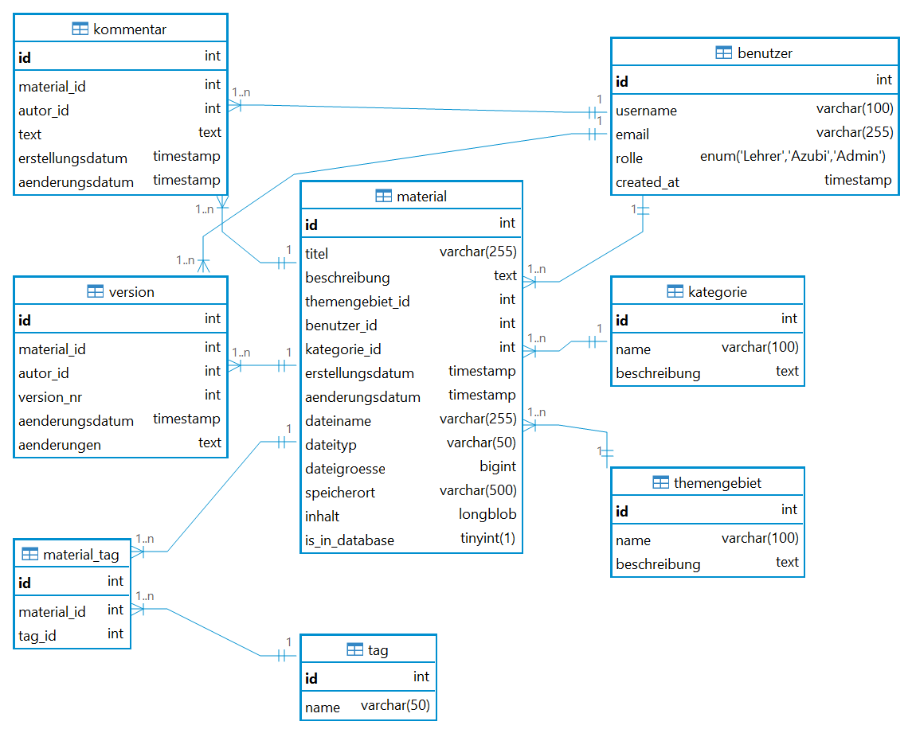

LF8-Abschlussprojekt · Daten systemübergreifend bereitstellen
01
Lernmaterial
verwaltung
Zentrales Materialmanagementsystem
auf Python & MySQL-Basis
Lernfeld
LF 8
Zeitraum
Apr – Mai 2026
Gesamtaufwand
43 Stunden
Stack
Python · SQLAlchemy · MySQL
Auric Ergeson · Azubi Anwendungsentwickler · Mai 2026
Berufsschule
Überblick
02
Agenda
01
Ausgangssituation
06
Systemarchitektur & Funktionen
02
Aufgabenstellung & Zielsetzung
07
Herausforderungen & Lösungen
03
Projektplanung & Prozessschritte
08
Soll-Ist-Vergleich
04
Lösungskonzept & Entscheidungen
09
Ergebnis
05
Datenbankdesign
10
Fazit & Reflexion
Auric Ergeson · Lernmaterialverwaltung · LF8
02 / 12
Ausgangssituation · Problemstellung
03
Ausgangssituation
„Unterrichtsmaterialien werden per E-Mail verteilt, auf verschiedenen Computern abgelegt —
ohne zentrale Verwaltung, ohne Suche, ohne Versionierung."
Dezentrale Ablage
Jede Lehrkraft verwendet eine eigene Ordnerstruktur — kein einheitliches System.
Keine Suchfunktion
Materialien sind schwer auffindbar. Nur wer den genauen Dateinamen kennt, findet die Datei.
Versionschaos
Überarbeitungen werden nicht nachverfolgt — veraltete Versionen zirkulieren weiter.
Auric Ergeson · Lernmaterialverwaltung · LF8
03 / 12
Aufgabenstellung & Zielsetzung
04
Aufgabenstellung & Zielsetzung
Funktionale Ziele
✓
Materialien hochladen, herunterladen & durchsuchen
✓
Kommentarfunktion für Lehrkräfte & Azubis
✓
Benutzerverwaltung mit Rollen (Lehrer, Azubi, Admin)
✓
7 SQL-Abfragen mit Aggregation, JOINs & Filtern
✓
Strukturierte Ausgabe über CLI mit rich-Bibliothek
Nicht im Scope
Bewusst ausgegrenzt
×
Web-Oberfläche — außerhalb des LF8-Rahmens, erfordert eigenes Lernfeld
×
Echtzeitsynchronisation zwischen Clients
×
Automatische Datensicherung / Backup-System
Auric Ergeson · Lernmaterialverwaltung · LF8
04 / 12
Projektplanung & Prozessschritte
05
Projektplanung
Phase 01
Analyse & Planung
4 h (geplant)
→
Phase 02
Datenbankdesign
6 h (geplant)
→
Phase 03
Implementierung
15 h (geplant)
→
Phase 04
Test & Debugging
4 h (geplant)
→
Phase 05
Dokumentation
6 h (geplant)
Warum DB-first?
Datenbankdesign vor Implementierung abgeschlossen — Schema-first verhindert späteren Refactoring-Aufwand.
Projektstart
06. April 2026
Abgabe
16. Mai 2026
Gesamtplanung
35 Stunden
Auric Ergeson · Lernmaterialverwaltung · LF8
05 / 12
Lösungskonzept & Entscheidungen
06
Lösungskonzept & Entscheidungen
| Ansatz | Versionierung | Suchfunktion | Datenbankanbindung | Zeitaufwand |
|---|---|---|---|---|
| Freigegebener Ordner | ✗ | ✗ | ✗ | Gering |
| Excel-Tabelle | ✗ | ~ | ✗ | Mittel |
| Web-Anwendung | ✓ | ✓ | ✓ | Sehr hoch — außerhalb LF8 |
| CLI + Python + MySQL ★ | ✓ | ✓ | ✓ | Mittel — LF8-konform |
Entscheidung: CLI-Anwendung mit Python, SQLAlchemy & MySQL — Datenbanklogik-fokussiert, LF8-konform, im Zeitrahmen umsetzbar.
Auric Ergeson · Lernmaterialverwaltung · LF8
06 / 12
Datenbankdesign & Datenmodell
07
Datenbankdesign
8 Tabellen in 3. Normalform
benutzer · themengebiet · kategorie · tag · material · kommentar · material_tag · version
Tags in eigener Tabelle (1NF)
Statt kommaseparierter Werte — korrekte Normalisierung verhindert Anomalien bei Änderungen.
material_tag (N:M-Beziehung)
Dualer Dateispeicher
Dateien < 1 MB → LONGBLOB in MySQL-Datenbank
Dateien ≥ 1 MB → Dateisystem (app/uploads/)
is_in_database (BOOLEAN Flag)
Dateien ≥ 1 MB → Dateisystem (app/uploads/)
Trigger für Versionierung
MySQL-Trigger erstellt bei jeder Änderung automatisch einen Eintrag in der version-Tabelle.

ERD · Erstellt mit DBeaver
Auric Ergeson · Lernmaterialverwaltung · LF8
07 / 12
Systemarchitektur & Funktionsumfang
08
Systemarchitektur & Funktionen
main.py
CLI-Oberfläche & Benutzerinteraktion
rich 15.0
↓
services.py
Geschäftslogik, CRUD, SQL-Abfragen
SQLAlchemy 2.0
↓
database.py
Verbindungsmanagement & ORM
PyMySQL
MySQL 8
MySQL 8
7 SQL-Abfragen
COUNT · AVG · INNER JOIN · Multi-JOIN
JOIN + COUNT · Volltextsuche mit WHERE
JOIN + COUNT · Volltextsuche mit WHERE
01
Material hochladen
02
Material herunterladen
03
Suche & Filter
04
Material löschen
05
Kommentare verwalten
06
Listen & Übersichten
07
SQL-Abfragen ausführen
08
Einträge erstellen
Auric Ergeson · Lernmaterialverwaltung · LF8
08 / 12
Herausforderungen & Lösungsansätze
09
Herausforderungen & Lösungen
Herausforderung 01
SQLAlchemy Automap
Problem
Die automatische Tabellenerkennung mit
automap_base() erkannte Fremdschlüsselbeziehungen zwischen den Tabellen nicht korrekt — führte zu Laufzeitfehlern bei JOINs.Lösung
Manuelle Definition der Beziehungen mit
relationship() und expliziten foreign_keys=[]-Parametern. Dokumentation vertieft studiert.Herausforderung 02
Datei-Upload Kodierung
Problem
Beim Einlesen von Binärdateien (z. B. PDF, DOCX) trat ein
UnicodeDecodeError auf, weil Dateien im Textmodus geöffnet wurden.Lösung
Konsequenter Wechsel zum Binärmodus:
open(path, 'rb') für alle Dateioperationen. Gilt für Upload und Download.
Auric Ergeson · Lernmaterialverwaltung · LF8
09 / 12
Projektverlauf & Zeitauswertung
10
Soll-Ist-Vergleich
| Phase | Soll | Ist | Δ |
|---|---|---|---|
| Analyse & Planung | 4 h | 5 h | +1 h |
| Datenbankdesign | 6 h | 8 h | +2 h |
| Implementierung | 15 h | 18 h | +3 h |
| Test & Debugging | 4 h | 5 h | +1 h |
| Dokumentation | 6 h | 7 h | +1 h |
| Gesamt | 35 h | 43 h | +8 h |
Zeitplanung
35
→
43
Stunden
+23 %
Mehraufwand gegenüber Planung
Hauptursachen
SQLAlchemy-Lernkurve (automap, relationships) & erhöhter Debugging-Aufwand beim Datei-Upload haben die Implementierungsphase um 3 Stunden verlängert.
Auric Ergeson · Lernmaterialverwaltung · LF8
10 / 12
Projektergebnis & Produktvorstellung
11
Ergebnis
8
Funktionen implementiert
Upload · Download · Suche · Löschen · Kommentare · Listen · SQL · Erstellen
7
SQL-Abfragetypen
COUNT · AVG · INNER JOIN · Multi-JOIN · JOIN+COUNT · Volltextsuche
8
Datenbanktabellen
3. Normalform · Trigger · N:M-Beziehungen · Dual-Storage-Strategie
python app/main.py — Lernmaterialverwaltung
┌────┬────────────────────────────┬──────────────────┬────────────┬───────────┐
│ ID │ Titel │ Fach │ Kategorie │ Größe │
├────┼────────────────────────────┼──────────────────┼────────────┼───────────┤
│ 1 │ Python Grundlagen │ Programmierung │ Skript │ 285 KB │
│ 2 │ SQL-Abfragen erklärt │ Datenbanken │ Übung │ 1.2 MB │
│ 3 │ Netzwerkprotokolle OSI │ Netzwerke │ Folie │ 450 KB │
└────┴────────────────────────────┴──────────────────┴────────────┴───────────┘
▶ 3 Materialien gefunden · Datenbankverbindung aktiv · MySQL 8.0
Auric Ergeson · Lernmaterialverwaltung · LF8
11 / 12
Fazit & Persönliche Reflexion
12
Fazit & Reflexion
Was hat funktioniert
✓
DB-first Ansatz — Klares Schema vor der Implementierung hat Refactoring verhindert
✓
Drei-Schichten-Architektur — Saubere Trennung macht Änderungen lokal und beherrschbar
✓
rich-Bibliothek — Übersichtliche, professionelle CLI-Ausgabe ohne großen Aufwand
Was ich ändern würde
→
SQLAlchemy-Dokumentation früher und gezielter studieren — hätte 3 Stunden Debugging gespart
→
Zeitpuffer für unbekannte Technologien direkt in die Planung einkalkulieren
→
Als nächsten Schritt eine Web-Oberfläche ergänzen — für bessere Zugänglichkeit ohne CLI
„Strukturierte Datenbankplanung reduziert den Implementierungsaufwand — Zeitplanung mit unbekannten Technologien muss realistischer sein."
Auric Ergeson · Lernmaterialverwaltung · LF8 · Mai 2026
Vielen Dank — Fragen?